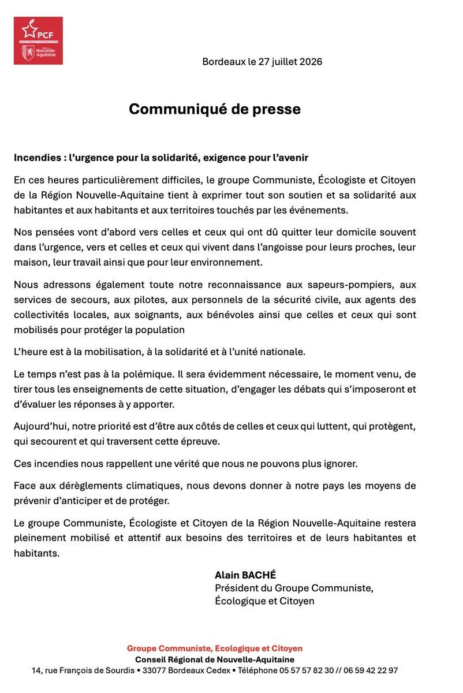

Réponse sur X
Incendies. Le communiqué du groupe communiste, écologiste et citoyen
Date de publication sur X · 29 juillet 2026
Repères éditoriaux
Cette réponse donne accès au communiqué du groupe communiste, écologiste et citoyen du conseil régional de Nouvelle-Aquitaine.
Texte de la publication sur X
Le communiqué https://t.co/OaM7pxBujY

Sources
PCF 79 · @79Parti sur X · AR-0005-TW-2082525810284429547
À lire aussi · Incendies. Les moyens de prévenir, d’anticiper et de protéger
Publications associées
- Incendies en Gironde et dans les Landes. Notre solidarité avec les habitants évacués · Début du fil sur les incendies
- Incendies. Les moyens de prévenir, d’anticiper et de protéger · Message auquel cette publication répond